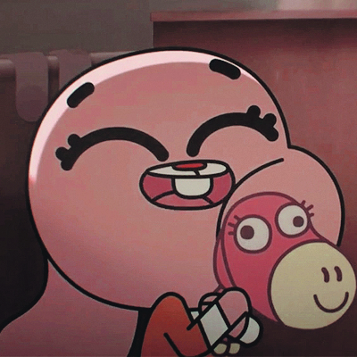

.jpg) Thế giới Kì diệu của Gumball
Thế giới Kì diệu của Gumball(tiếng Anh: The Amazing World of Gumball, hay còn được viết tắt là TAWOG) - là loạt phim truyền hình trẻ em hoạt hình của Anh - Mỹ do Ben Bocquelet sáng tạo và sản xuất bởi Cartoon Network. Loạt phim lần đầu tiên lên sóng vào ngày 3 tháng 5 năm 2011. Câu chuyện chủ yếu kể về cuộc sống xung quanh của một cậu bé mèo 12 tuổi tên là Gumball Watterson ở thị trấn Elmore, bạn thân của cậu là chú cá vàng tên là Darwin Watterson, đồng thời là em trai nuôi của cậu. Xuyên suốt tập phim, khán giả cũng sẽ được gặp gỡ các nhân vật khác như: em gái Anais, cha Richard và mẹ Nicole...
Boccquel đã từng từ chối bán bản quyền của các nhân vật trong sê-ri bởi ông cho rằng đây là một chương trình "giáo dục gia đình và trường học" mà Cartoon Network lại rất chú trọng điều đó (?). Ông ấy đã đưa Thế giới Kì diệu của Gumball lên trên kênh mạng của Turner Broadcasting do Daniel Lennard điều hành cùng các nhà sản xuất của bộ phim. Đây là loạt phim đầu tiên được sản xuất bởi Cartoon Network Development Studio Europe, với đồng sản xuất là Studio SIO và Great Marlborough Productions. Một nét khá độc đáo của phim là mỗi nhân vật đều có những cá tính khác biệt. Các nhân vật hoạt hình được thiết kế và đưa lên phim với nhiều phong cách và kỹ thuật (cách điệu vẽ tay truyền thống, múa rối, CGI, tĩnh vật, hoạt hình flash, người thật đóng...).
Loạt phim đã thay đổi nhiều phong cách trong suốt quá trình sản xuất, đặc biệt là trong quá trình chuyển giao giữa đầu mùa một và mùa hai, chẳng hạn như thiết kế lại nhân vật, tăng sử dụng hiệu ứng hình ảnh, chất lượng hoạt hình cao hơn và thay đối hướng tới phong cách hài hước, châm biếm nhiều hơn.Khi Cartoon Network Development Studio Europe được thành lập vào năm 2007, Ben Bocquelet đã được chỉ đạo để giúp hãng quảng cáo những dự án của hãng lên các trang mạng. Tuy nhiên, khi hãng phim quyết định tập trung toàn bộ các nhân viên thực hiện ý tưởng của mình, ông lại quyết định từ chối để các nhân vật mà ông sáng tạo ra cho hãng dùng làm quảng cáo mà tập trung chúng lại với nhau, trở thành một loạt phim hoạt hình ở trường học. Daniel Lennard, phó Chủ tịch của sê-ri hiện tại và của Bộ phận phát triển trong Turner Broadcasting đã rất ấn tượng trước ý tưởng mới của Ben và phê duyệt dự án của ông. Đây là bộ phim đầu tiên được sản xuất bởi Cartoon Network Development Studio Europe. 36 tập phim của mùa đầu tiên được hãng sản xuất hợp tác với Studio SOI (có trụ sở tại Boulder Media Limited) và Dandelion Studios.
Tập phim
Mùa đầu tiên của Thế giới Kì diệu của Gumball ra mắt vào ngày 3 tháng 5 năm 2011 với tập phim có tên "The DVD" và kết thúc vào ngày 13 tháng 3 năm 2012 với tập phim có tên "The Fight". 40 tập của mùa thứ hai đã được công bố vào ngày 17 tháng 3 năm 2011, trước khi ra mắt mùa đầu tiên của loạt phim. Phát biểu về mùa phim mới, nhà sản xuất điều hành Daniel Lennard tuyên bố: "Việc công bố mùa phim thứ hai trước khi mùa đầu tiên phát sóng cho thấy sự cam kết và niềm tin tuyệt đối của chúng tôi vào loạt phim, chúng tôi đang hi vọng khán giả sẽ đón nhận chương trình này nhiều như chúng tôi." Thế giới Kì diệu của Gumball đã được công bố làm tiếp mùa ba gồm 40 tập vào tháng 10 năm 2012. Tháng 2 năm 2013, loạt phim bị gián đoạn nhưng trở lại vào tháng 6 năm 2013. Ngày 6 tháng 9 năm 2016, Ben Bocquelet sẽ dừng tham gia sản xuất Gumball sau khi hoàn thành mùa sáu, nhưng đoàn làm phim sẽ vẫn tiếp tục hoạt động mà không có ông. Nhưng, có một thông báo mới từ Cartoon Network vào tháng 2 năm 2021 rằng họ đang làm Gumball Movie.
 Gumball Tristopher Watterson (Tên thật cũ là Zac)(Được lồng tiếng bởi Logan Grove trong seasons 1-3, Jacob Hopkins trong seasons 3-5 và Nicolas Cantu trong season 5 trở đi): Gumball là một chú mèo 12 tuổi màu xanh đã nhiều lần đưa mình vào tình huống rắc rối. Gumball có tính cách tinh nghịch và thông minh. Bằng chứng là Gumball diễn đạt câu từ rất trôi chảy và hoạt bát, trí tưởng tượng cực kỳ phong phú. Mặc dù vậy Gumball luôn luôn nóng vội và không phải là kẻ khôn ngoan, mọi kế hoạch của cậu thường dẫn cậu ta vào rắc rối. Cậu phải lòng với Penny, 1 người bạn học cùng lớp, bố cô là Fitzgerald. Cô hay chia sẻ những cảm xúc tương tự cho cậu - tuy nhiên, cả hai đều đấu tranh để thể hiện đúng cảm xúc của mình dành cho nhau. Gumball thường không thực hiện được những nhiệm vụ rất đơn giản và là người có khả năng lãnh đạo rất tồi. Mặc dù hành vi hay nổi giận, cậu vẫn trung thành, nghiêm túc và tốt bụng.
Gumball Tristopher Watterson (Tên thật cũ là Zac)(Được lồng tiếng bởi Logan Grove trong seasons 1-3, Jacob Hopkins trong seasons 3-5 và Nicolas Cantu trong season 5 trở đi): Gumball là một chú mèo 12 tuổi màu xanh đã nhiều lần đưa mình vào tình huống rắc rối. Gumball có tính cách tinh nghịch và thông minh. Bằng chứng là Gumball diễn đạt câu từ rất trôi chảy và hoạt bát, trí tưởng tượng cực kỳ phong phú. Mặc dù vậy Gumball luôn luôn nóng vội và không phải là kẻ khôn ngoan, mọi kế hoạch của cậu thường dẫn cậu ta vào rắc rối. Cậu phải lòng với Penny, 1 người bạn học cùng lớp, bố cô là Fitzgerald. Cô hay chia sẻ những cảm xúc tương tự cho cậu - tuy nhiên, cả hai đều đấu tranh để thể hiện đúng cảm xúc của mình dành cho nhau. Gumball thường không thực hiện được những nhiệm vụ rất đơn giản và là người có khả năng lãnh đạo rất tồi. Mặc dù hành vi hay nổi giận, cậu vẫn trung thành, nghiêm túc và tốt bụng. Darwin Raglan Caspian Ahab Poseidon Nicodemius Watterson III(Được lồng tiếng bởi Kwesi Boakye trong seasons 1-3, Terrell Ransom Jr. trong seasons 3-5, Donielle T. Hansley Jr. trong seasons 5-6 và Christain J. Simon trong season 6): Darwin, một con cá vàng 10 tuổi, là người bạn thân nhất và là em trai nuôi của Gumball. Ban đầu Darwin là thú cưng của Gumball, sau này Darwin mọc chân và trở thành thành viên của gia đình Watterson. Do bất ngờ về thế giới của mình, cậu cả tin hơn các nhân vật khác. Cậu dễ dàng bị cuốn hút và hay sợ hãi những điều đơn giản. Cậu rất thích cô bạn Dorothy, 1 người bạn vừa chuyển đến trường. Gumball đôi khi gây ảnh hưởng xấu cho Darwin, song cậu rất trung thành với Gumball và giúp Gumball thoát ra khỏi tình huống khó khăn. Trong tập phim "Sidekick" Darwin được coi là "người giám hộ", là người giúp cho Gumball không đưa ra những quyết định sai trái.
Darwin Raglan Caspian Ahab Poseidon Nicodemius Watterson III(Được lồng tiếng bởi Kwesi Boakye trong seasons 1-3, Terrell Ransom Jr. trong seasons 3-5, Donielle T. Hansley Jr. trong seasons 5-6 và Christain J. Simon trong season 6): Darwin, một con cá vàng 10 tuổi, là người bạn thân nhất và là em trai nuôi của Gumball. Ban đầu Darwin là thú cưng của Gumball, sau này Darwin mọc chân và trở thành thành viên của gia đình Watterson. Do bất ngờ về thế giới của mình, cậu cả tin hơn các nhân vật khác. Cậu dễ dàng bị cuốn hút và hay sợ hãi những điều đơn giản. Cậu rất thích cô bạn Dorothy, 1 người bạn vừa chuyển đến trường. Gumball đôi khi gây ảnh hưởng xấu cho Darwin, song cậu rất trung thành với Gumball và giúp Gumball thoát ra khỏi tình huống khó khăn. Trong tập phim "Sidekick" Darwin được coi là "người giám hộ", là người giúp cho Gumball không đưa ra những quyết định sai trái.Anais Errrrrr Watterson(Được lồng tiếng Kyla Rae Kowalewski): Một chú thỏ màu hồng, Anais là em gái 4 tuổi của Gumball và Darwin. Cô ấy vô cùng thông minh, thông minh hơn so với tuổi của mình, đến mức mà cô học vượt lên trên cả trình độ Trung học của trường Elmore với 2 anh trai mình. Gumball không thích cô vì cô luôn nói cho cậu ấy biết phải làm gì, nhưng dù sao cậu cũng yêu quý cô và thừa nhận ý định tốt của cô. Mặc dù thông minh nhưng cô vẫn có hành vi của trẻ con, điển hình là đã cố gắng để phù hợp với Gumball và Darwin nhiều lần trong "The Dump".